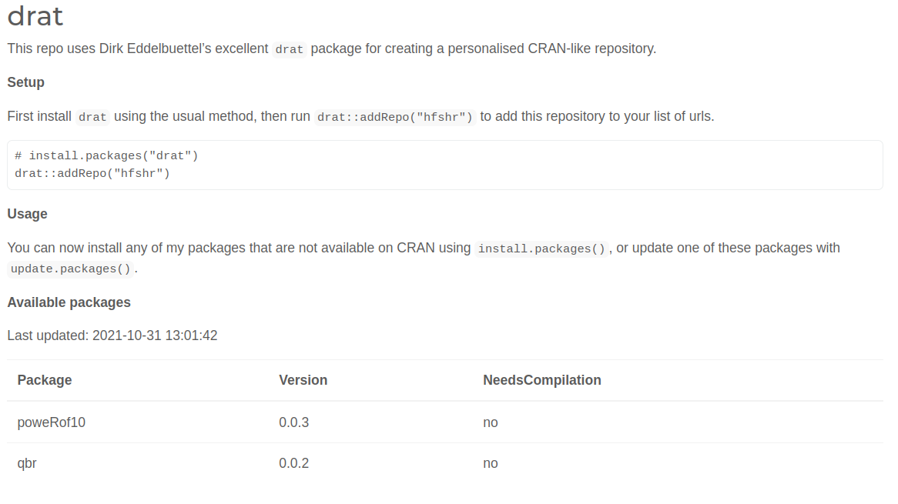

drat::insertPackage("<package_name>.tar.gz")Oh {drat}!
A quick look at creating your own CRAN-like repository and implementing some github actions to automate the process of adding and updating packages.
Drat
Recently, I’ve been investigating some approaches for creating your own CRAN-like repository for sharing a specific set of packages. There are a variety of solutions available for this problem (For example; RStudio package manager, RDepot and MiniCran), however I wanted to focus specifically on the great {drat} package by Dirk Eddelbuettel.
Creating your own CRAN(ish) can sound a bit scary, at least it did to me before I started digging a bit deeper into {drat}, but fear not! There is great documentation and the steps are relatively easy to follow. I’ve jotted down a few notes on how I did it, in the hope they might be of use for someone else trying to implement a similar thing.
Initial setup
To get started, you have two options:
- Fork this repo, and follow these instructions.
- Use
drat::initRepo(), specifying thebasepathfor your new repository (assuming you don’t want to use the default of ~/git).
I opted for option 2, and the result was a simple repository in the right format. Also notice that initRepo creates a gh-pages, branch in your new directory. I left this as is, but you could also create the repository in the docs/ directory on the main branch by specifying the location argument.
Checkout ?drat::initRepo() for more information.
In order to add a package to your repository, you first need to build the package (e.g., using R CMD build <package_name>). With the resulting tar.gz file you can run
and drat will take care of the rest.
Finally, commit and push your changes to github to make your package available to download!
For example, first add your repository with the helper function drat::addRepo() and then install the package.
drat::addRepo("hfshr")
install.packages("qbr")Automating

Now getting this point felt pretty cool, but having to manually build the package each time seemed a bit too much like hard work… I had an idea that using some kind of github action might be able to help, and after a bit of googling I found exactly what was needed. Fortunately, Michael Mahoney had written an excellent post on developing a github action to build a package and push it to the drat repository. I’ll refer the reader to Michaels post, and this repo to see exactly how it works, but the code chunk below shows the workflow I added to my {qbr} package.
on:
push:
branches:
- 'main'
workflow_dispatch:
jobs:
drat-upload:
runs-on: ubuntu-20.04
env:
R_REMOTES_NO_ERRORS_FROM_WARNINGS: true
RSPM: "https://packagemanager.rstudio.com/all/__linux__/focal/latest"
name: Drat Upload
steps:
- uses: mikemahoney218/upload-to-drat-repo@v0.1
with:
drat_repo: 'hfshr/drat'
token: "${{ secrets.DRAT_SECRET }}"
commit_message: "Automated update (add qbr)"
commit_email: "harryfisher21@gmail.com"The only parts you should need to change are the final four lines, where you;
- Specify the name of your drat repository (e.g., <github username>/<drat repository name>)
- A personal access token saved as a github secret in your repository called
DRAT_SECRET. - A commit message that will appear in the drat repo.
- Your email for git commit.
Again, I would highly recommend reading Mike’s post for a more complete guide into setting this up.
Now this work really well, however I also needed a way to update the information in my drat repository. Specifically, in my drat repo I have a README.Rmd that when knitted generates some information about the available packages. This README.Rmd also generates the index.html file that is used as the homepage for the repository, which you can see here and below:

Currently it is very basic, but does the job. I added a separate action to the drat repo inspired by this workflow that aims to do something very similar. My final result looks like this:
on:
push:
branches:
- 'gh-pages'
workflow_dispatch:
name: drat-readme
jobs:
drat-readme:
name: Update README
runs-on: ubuntu-20.04
env:
R_REMOTES_NO_ERRORS_FROM_WARNINGS: true
RSPM: "https://packagemanager.rstudio.com/all/__linux__/focal/latest"
steps:
- uses: actions/checkout@v2
with:
fetch-depth: '0' # Allows corect dates in git history
- uses: r-lib/actions/setup-r@master
- uses: r-lib/actions/setup-pandoc@master
- name: update repo indices # needed if tar balls removed manually
run: |
install.packages("drat")
drat::updateRepo(".")
shell: Rscript {0}
- name: Drat -- update README.Rmd
if: success()
run: |
install.packages(c('rmarkdown', 'bslib', 'knitr'))
rmarkdown::render("README.Rmd", output_format = "html_document", output_file = "index.html")
rmarkdown::render("README.Rmd", output_format = "github_document")
shell: Rscript {0}
- name: Commit and push
if: success()
run: |
git config --global user.email "actions@github.com"
git config --global user.name "GitHub Actions"
git commit README.md index.html -m "Update README (auto)" || echo "Nothing to commit"
git push origin || echo "Nothing to commit"Any pushes the the gh-pages branch of the drat repo will trigger this action to start. This action does a few things:
- Checks the drat repo is up to date by running
drat::updateRepo(). - Knits the README.Rmd into both .md and .html formats, with the latter also being renamed to index.html so it serves as the homepage for the repo.
- Commits these changes with a short message.
Now any time I update one of my packages that have the first github action implemented, the drat repo will also be updated! Pretty cool 😎 (Well I thought so anyway..!) I’m sure this could be refined further, so any suggestions are more than welcome!